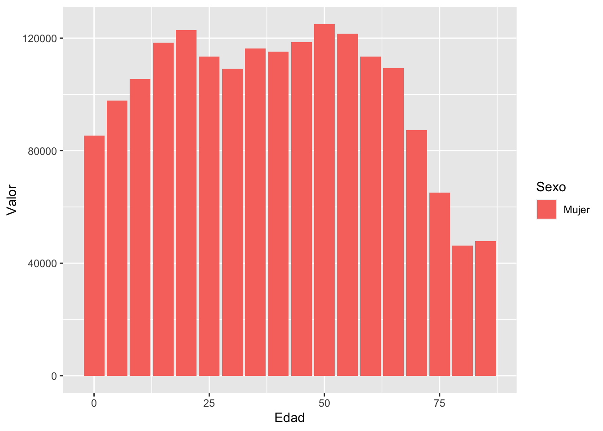
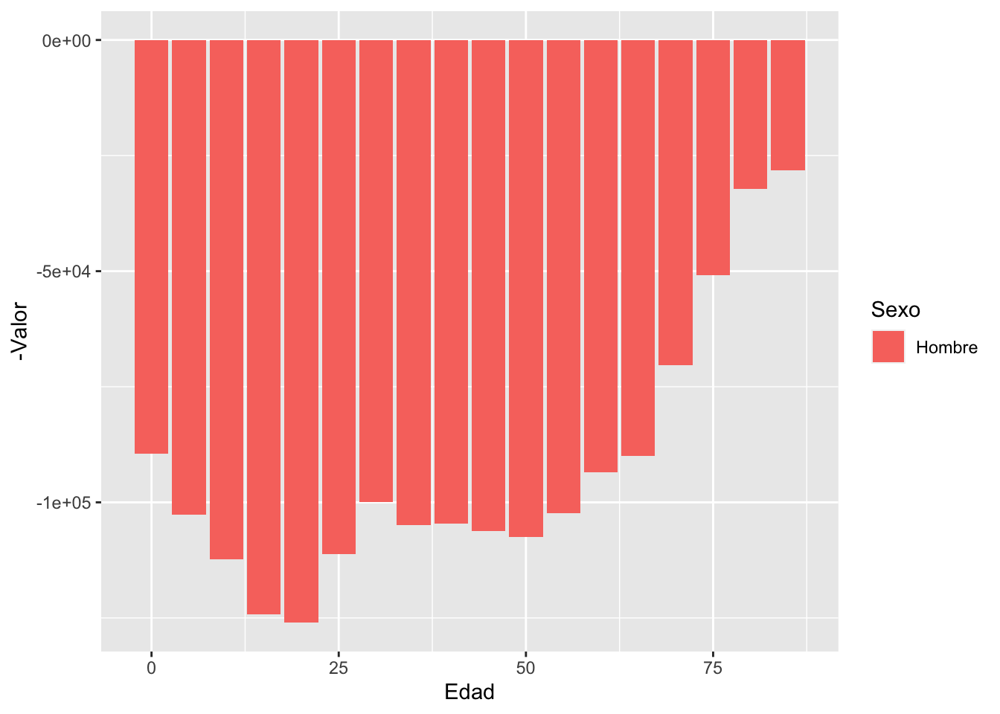
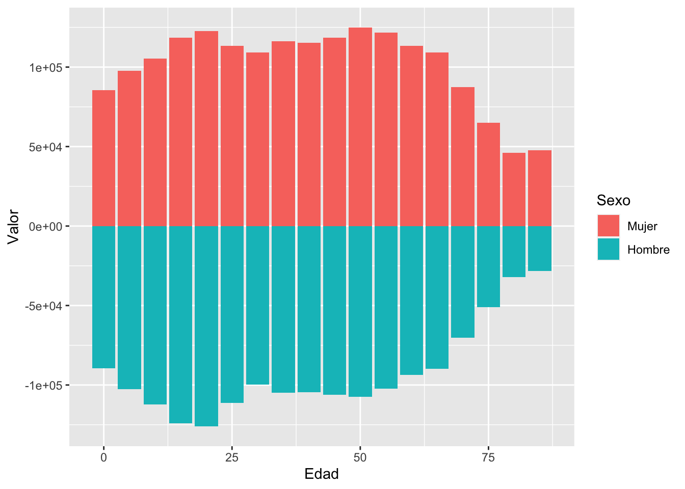
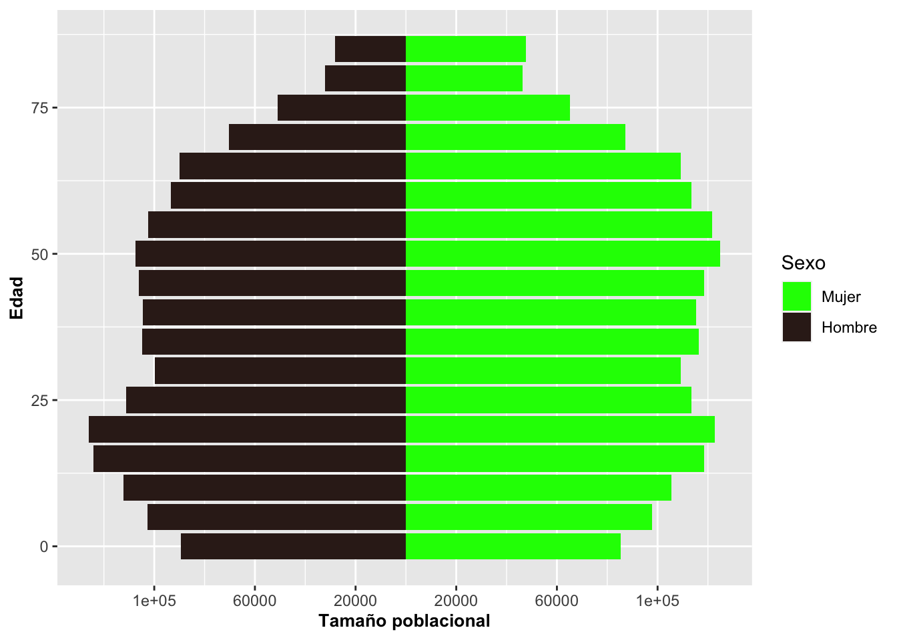
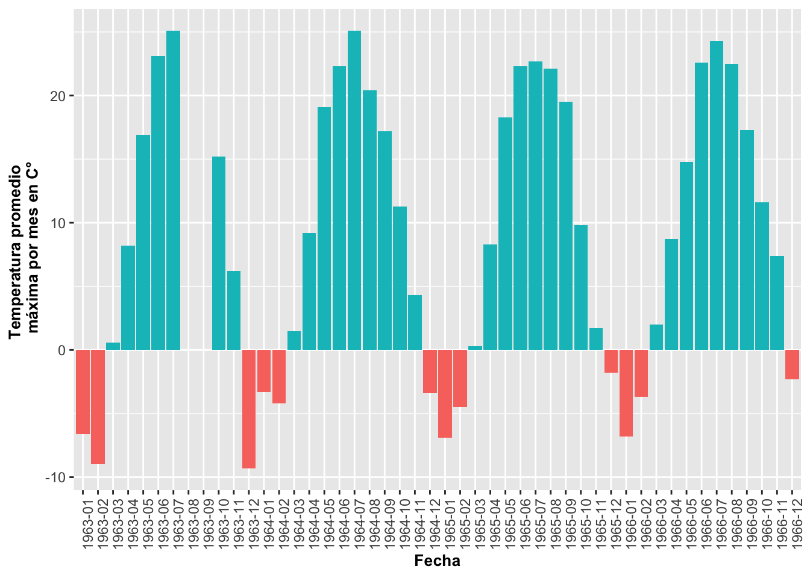

Gráficos de barras con geom_bar
Fecha de la ultima revisión
## [1] "2024-02-21"

## ── Attaching core tidyverse packages ──────────────────────── tidyverse 2.0.0 ──
## ✔ dplyr 1.1.4 ✔ readr 2.1.5
## ✔ forcats 1.0.0 ✔ stringr 1.5.1
## ✔ ggplot2 3.4.4 ✔ tibble 3.2.1
## ✔ lubridate 1.9.3 ✔ tidyr 1.3.1
## ✔ purrr 1.0.2
## ── Conflicts ────────────────────────────────────────── tidyverse_conflicts() ──
## ✖ dplyr::filter() masks stats::filter()
## ✖ dplyr::lag() masks stats::lag()
## ℹ Use the conflicted package (<http://conflicted.r-lib.org/>) to force all conflicts to become errors##
## Attaching package: 'janitor'
##
## The following objects are masked from 'package:stats':
##
## chisq.test, fisher.test##
## Attaching package: 'gridExtra'
##
## The following object is masked from 'package:dplyr':
##
## combineUna variable discreta: Gráfico de barras con geom_bar
El gráfico de barras es una representación de la frecuencia de ocurrencia de eventos para valores discretos; por ejemplo, sí o no, o valores categóricos. La función geom_bar genera un gráfico que tabula la cantidad de veces que ocurre un evento. La altura de las barras representa el número de observaciones de una categoría discreta representada en el eje de X.
En el siguiente ejemplo, primero removeremos los NA del archivo usando drop_na(), es el función que excluye todas las filas que contienen los NA. Nuevamente utilizaremos el archivo de datos de la Dipodium rosea:
# DW$Number_of_Flowers # Antes de hacer los análisis mira los datos, y vea que hay muchas filas con **NA**, remueve **#** para activar la función.
# Method 1
head(DW)## # A tibble: 6 × 21
## tree_number tree_species dbh plant_number ramet_number distance orientation
## <int> <chr> <dbl> <int> <int> <dbl> <dbl>
## 1 1 E.o 75 1 1 2.47 40
## 2 1 E.o 76 2 1 1.97 50
## 3 2 E.o 76 3 1 1.95 350
## 4 3 E.o 58 4 1 3.24 210
## 5 4 E.o NA 5 1 0.85 80
## 6 5 E.o 59 6 1 2.62 160
## # ℹ 14 more variables: number_of_flowers <int>, height_inflo <int>,
## # herbivory <chr>, row_position_nf <int>, number_flowers_position <int>,
## # number_of_fruits <int>, perc_fr_set <dbl>, pardalinum_or_roseum <chr>,
## # fruit_position_effect <int>, frutos_si_o_no <int>,
## # p_or_r_infl_lenght <chr>, num_of_fruits <int>, species_name <chr>,
## # cardinal_orientation <int>DW %>%
drop_na(number_of_flowers)%>%
ggplot(aes(number_of_flowers))+
geom_bar(fill="red",color="white")+
xlab("Cantidad de Flores")+
ylab("Frecuencia")+
theme(axis.title=element_text(size=14,face="bold"))
Cambio de intensidad de color con alpha
Se puede cambiar la intensidad del color de las barras usando alpha. los valores pueden variar de 0 a 1, donde 1 es mas intenso el color, aquí se utiliza un alpha=0.3.
## # A tibble: 6 × 21
## tree_number tree_species dbh plant_number ramet_number distance orientation
## <int> <chr> <dbl> <int> <int> <dbl> <dbl>
## 1 1 E.o 75 1 1 2.47 40
## 2 1 E.o 76 2 1 1.97 50
## 3 2 E.o 76 3 1 1.95 350
## 4 3 E.o 58 4 1 3.24 210
## 5 4 E.o NA 5 1 0.85 80
## 6 5 E.o 59 6 1 2.62 160
## # ℹ 14 more variables: number_of_flowers <int>, height_inflo <int>,
## # herbivory <chr>, row_position_nf <int>, number_flowers_position <int>,
## # number_of_fruits <int>, perc_fr_set <dbl>, pardalinum_or_roseum <chr>,
## # fruit_position_effect <int>, frutos_si_o_no <int>,
## # p_or_r_infl_lenght <chr>, num_of_fruits <int>, species_name <chr>,
## # cardinal_orientation <int># [df(fila,columas)]
b=ggplot(DW[!is.na(DW$number_of_flowers),],
aes(number_of_flowers))
b+geom_bar(alpha=.3,
fill="blue",color="white")+
xlab("Posiciones de las \n flores en la inflorescencia")+
ylab("Frecuencia")+
theme(axis.title=element_text(size=14,face="bold"))

Figura: Lepanthes eltoroensis, EL Yunque, Puerto Rico
- Seleccione el archivo “Lelto” en el paquete “ggversa”. Seleccione la
variable adultos o juvenil, que representa la cantidad de plantas adulto
o juvenil que se encuentra en el árbol. Los datos son de una pequeñita
orquídea que esta limitado las veredas del “El Toro” y de los “Vientos
Alizios” en el Yunque.
- Mire el nombre de las columnas primero
- Cambie de color las barras
- Cambie el nombre de los nombres de los ejes
- Salva el gráfico con extensión de .png
- Sube el gráfico a MSTeam
Multiples grupos
Ahora le añadiremos una variable discreta que representa las frecuencias de las plantas con frutos y la frecuencia de plantas sin frutos para las posiciones de la flor en la inflorescencia. En el script se observa que la variable Frutos_si_o_no se identifica como un factor. Esto es necesario porque en el archivo de datos la presencia de frutos y flores fue identificada como 1 o 0 o sea valores numéricos. Si se hubiera identificado como Sí o No, no habría la necesidad de identificar que es un factor. En tal caso, es necesario identificar que estos valores son una categoría usando factor. El gráfico presenta las variables discretas una sobre la otra. Note en la Figura al igual que con geom_histogram, la frecuencia del segundo grupo es añadida a la frecuencia del primer grupo.
DW%>%
select(fruit_position_effect,frutos_si_o_no )%>%
drop_na(fruit_position_effect)%>%
ggplot(aes(fruit_position_effect))+
geom_bar(aes(fill=factor(frutos_si_o_no)))+
xlab("Posiciones de las \n flores en la inflorescencia")+
ylab("Frecuencia")+
theme(axis.title=element_text(size=14,face="bold"))+
scale_fill_manual(values = c("green", "#36211D"))+
scale_color_manual(values = c("yellow", "blue"))
## Tree Trail Distance Alt_m Angulo Rango_rad Localizacion Inclinacion DBH
## 1 203 Tw 0 780 260 4.535556 230 50 18.1
## 2 204 Tw 228 783 158 2.756222 220 40 23.2
## 3 205 Tw 38 783 90 1.570000 30 30 10.6
## 4 206 Tw 28 785 355 6.192778 250 40 10.8
## 5 209 Tw 47 790 340 5.931111 260 55 14.1
## 6 210 Tw 7 790 350 6.105556 180 30 11.4
## Plantulas Juveniles Adultos T_Num Lado_vereda lat long
## 1 6 21 5 32 izquierda 18.2875 -65.80417
## 2 7 12 7 26 izquierda 18.2925 -65.80580
## 3 2 2 0 4 derecha 18.2922 -65.80670
## 4 6 21 5 32 izquierda 18.2919 -65.80640
## 5 5 10 0 15 derecha 18.2911 -65.80780
## 6 0 10 8 18 izquierda 18.2914 -65.80780Posicionar las barras uno al lado del otro
Para presentar los grupos uno al lado del otro se usa el parámetro position =“dodge”, lo que hará que cada grupo quede posicionado contiguamente. Además, removeremos la leyenda con guides(fill=FALSE) como se muestra a continuación con los datos de la Dipodium rosea:
DW%>%
select(fruit_position_effect,frutos_si_o_no )%>%
drop_na(fruit_position_effect)%>%
ggplot(aes(fruit_position_effect))+
geom_bar(aes(fill=factor(frutos_si_o_no)),color="white",
position = "dodge")+
xlab("Posiciones de las flores en la inflorescencia")+
ylab("Frecuencia")+
guides(fill=FALSE)+
theme(axis.title=element_text(size=14,face="bold"))## Warning: The `<scale>` argument of `guides()` cannot be `FALSE`. Use "none" instead as
## of ggplot2 3.3.4.
## This warning is displayed once every 8 hours.
## Call `lifecycle::last_lifecycle_warnings()` to see where this warning was
## generated.
Posicionar las barras una encima de la otra
En el próximo gráfico, la frecuencia de ambos grupos comienza en cero pero aún saldrán sobrepuestos uno al otro usando position=identity
DW%>%
select(fruit_position_effect,frutos_si_o_no )%>%
drop_na(fruit_position_effect)%>%
ggplot(aes(fruit_position_effect))+
geom_bar(aes(fill=factor(frutos_si_o_no)),color="white",
position = "identity")+ # Para que cada grupo comience en cero
xlab("Posiciones de las flores en la inflorescencia")+
ylab("Frecuencia")+
guides(fill=FALSE)+
theme(axis.title=element_text(size=14,face="bold"))
Porcentaje porporcional a todos los valores
Para mostrar el porcentaje de cada uno de los grupos, tenemos que usar una fórmula para calcular la proporción por grupo usando y=(..count..)/sum(..count..). Así la suma de todas las barras equivale al 100%. Vemos que en las categorías altas (que aparecen más a la derecha en el gráfico) algunas barras están más anchas. Esto se debe a que, en el archivo de datos, para algunas de estas posiciones de las flores en la inflorescencia no hay información para la segunda especie (la que aparece en azul). Esto se puede resolver añadiendo la información en el archivo original.
fill=factor(Frutos_si_o_no)
DW%>%
select(fruit_position_effect,frutos_si_o_no )%>%
drop_na(fruit_position_effect)%>%
ggplot(aes(fruit_position_effect))+
geom_bar(aes(y=(..count..)/sum(..count..),
fill=factor(frutos_si_o_no)),
color="white", position="identity")+ # Para que cada grupo comience en cero se usa position = "identity"
xlab("Posiciones de las flores en la inflorescencia")+
ylab("Frecuencia")+
guides(fill=FALSE)+
theme(axis.title=element_text(size=14,face="bold"))## Warning: The dot-dot notation (`..count..`) was deprecated in ggplot2 3.4.0.
## ℹ Please use `after_stat(count)` instead.
## This warning is displayed once every 8 hours.
## Call `lifecycle::last_lifecycle_warnings()` to see where this warning was
## generated.
Porcentaje por valos de cada X
Para que cada barra represente el 100% de los grupos en el eje de X, se usa el parámetro position=“fill”. En el siguiente ejemplo se le añade la variable discreta en este caso; o sea, si la planta tiene frutos (verde) o no (rojo). Ecologicamente se observa que la posición de las flores arriba (>27) en la inflorescencia resulta en menos frutos porcentualmente que las posiciones más abajo.
## Loading required package: scales##
## Attaching package: 'scales'## The following object is masked from 'package:purrr':
##
## discard## The following object is masked from 'package:readr':
##
## col_factorDW%>%
select(fruit_position_effect,frutos_si_o_no )%>%
drop_na(fruit_position_effect)%>%
ggplot(aes(factor(fruit_position_effect),
fill=factor(frutos_si_o_no)))+
geom_bar(aes(y=(..count..)/sum(..count..)),
position="fill")+ # Para que cada columna sume a 1.0 se usa position = "fill"
xlab("Posiciones de las flores en la inflorescencia")+
ylab("Proporción")+
guides(fill=FALSE)+
theme(axis.title=element_text(size=10,face="bold"))
Seleccione el archivo “Lelto” en el paquete “ggversa”. Seleccione la variable adultos o juvenil, que representa la cantidad de plantas adulto o juvenil que se encuentra en el árbol. Los datos son de una pequeñita orquídea que esta limitado las veredas del “El Toro” y de los “Vientos Alizios” en el Yunque. Primero se va unir las columnas de juvenil con las de adultos, para después hacer un gráfico donde cada columna sume a 1.0 se usa position = “fill”.
– paso 1
head(Lelto)
– paso 2
df=Lelto %>% select(Juveniles, Adultos)
– paso 3
dfLelto = df%>% gather(key=“Estado”, value=“Conteos”) # gather( ) recuerda esta función, siempre me hace dificil encontrarla en el web.
– Mire el nombre de las columnas primero y como esta organiado
- Cambie de color las barras
- Cambie el nombre de los nombres de los ejes
- Salva el gráfico con extensión de .png
- Sube el gráfico a Edmodo
Reordenar las barras con geom_bar
En el siguiente gráfico, reordenamos la secuencia en X por orden del número de flores y su frecuencia. Primero, hay que crear una función para reordenar la variable, la que llamaremos reorder_size. El segundo paso es invocar esta función desde ggplot. La función es aplicable a cualquier variable que uno quisiera ordenar y tener como factor. En la figura podemos observar que en el muestreo hay solamente una planta con la siguiente cantidad de flores (1, 3, 4, 7, 8, 34, 36, 37, 43; extremo izquierda), y hay 13 plantas con 23 flores (extremo derecha) y otras frecuencias de plantas con diferentes cantidades de flores entre medio.
# Aquí se crea una función para re-ordenar la variable X.
reorder_size <- function(x) {
factor(x, levels = names(sort(table(x))))
}
#reorder_size(DW$number_of_flowers)
DW%>%
select(number_of_flowers )%>%
drop_na(number_of_flowers)%>%
ggplot(aes(reorder_size(number_of_flowers)))+
geom_bar(fill="olivedrab")+
scale_y_continuous(breaks=c(0:13))+
labs(y="Número de plantas con la cantidad de flores",
x="Cantidad de flores \n en la inflorescencia")+
theme(axis.title=element_text(size=10,face="bold"))
Pirámides poblacionales con geom_bar
Un ejemplo interesante de geom_bar es cuando creamos pirámides poblacionales. Para el próximo ejemplo utilizaremos datos del censo de la base de datos de la Oficina del Censo de los EE. UU. US Census del 2015 sobre la población de Puerto Rico. Los datos representan la cantidad de mujeres en azul y hombres en rojo en categorías de edad; o sea, de 0 a 4 años, de 5 a 9 años y así sucesivamente. La última categoría incluye todos los puertorriqueños de 85 años o más. Para producir este gráfico, se generarán dos geom_bar uno al lado del otro; uno con los datos de Mujer (derecha) y otro con los datos de Hombre (izquierda).
Para especificar que se usen solamente los datos de un subgrupo de cada variable, se hace de la misma manera que en R; o sea,
subset(Pop_PR,Pop_PR$Sexo=="Mujer") # el "==" es para indicar que tiene que cumplir con esta condición exclusivaTambién note que tenemos datos a la izquierda y a la derecha del valor de cero. Se produce este patrón usando {-Valor} en uno de los grupos, donde el valor es el tamaño poblacional por grupo de edad. Por último, se tiene que añadir coord_flip() para que las barras queden de forma horizontal.
## Sexo Valor Edad
## 1 Hombre 89507 0
## 2 Hombre 102622 5
## 3 Hombre 112350 10
## 4 Hombre 124179 15
## 5 Hombre 125971 20
## 6 Hombre 111167 25
## 7 Hombre 99855 30
## 8 Hombre 104890 35
## 9 Hombre 104593 40
## 10 Hombre 106235 45
## 11 Hombre 107561 50
## 12 Hombre 102377 55
## 13 Hombre 93510 60
## 14 Hombre 89880 65
## 15 Hombre 70294 70
## 16 Hombre 50879 75
## 17 Hombre 32160 80
## 18 Hombre 28118 85
## 19 Mujer 85368 0
## 20 Mujer 97790 5
## 21 Mujer 105397 10
## 22 Mujer 118389 15
## 23 Mujer 122821 20
## 24 Mujer 113504 25
## 25 Mujer 109102 30
## 26 Mujer 116325 35
## 27 Mujer 115224 40
## 28 Mujer 118525 45
## 29 Mujer 124980 50
## 30 Mujer 121569 55
## 31 Mujer 113409 60
## 32 Mujer 109224 65
## 33 Mujer 87289 70
## 34 Mujer 65082 75
## 35 Mujer 46233 80
## 36 Mujer 47803 85## Sexo Valor Edad
## 1 Hombre 89507 0
## 2 Hombre 102622 5
## 3 Hombre 112350 10
## 4 Hombre 124179 15
## 5 Hombre 125971 20
## 6 Hombre 111167 25
## 7 Hombre 99855 30
## 8 Hombre 104890 35
## 9 Hombre 104593 40
## 10 Hombre 106235 45
## 11 Hombre 107561 50
## 12 Hombre 102377 55
## 13 Hombre 93510 60
## 14 Hombre 89880 65
## 15 Hombre 70294 70
## 16 Hombre 50879 75
## 17 Hombre 32160 80
## 18 Hombre 28118 85
## 19 Mujer 85368 0
## 20 Mujer 97790 5
## 21 Mujer 105397 10
## 22 Mujer 118389 15
## 23 Mujer 122821 20
## 24 Mujer 113504 25
## 25 Mujer 109102 30
## 26 Mujer 116325 35
## 27 Mujer 115224 40
## 28 Mujer 118525 45
## 29 Mujer 124980 50
## 30 Mujer 121569 55
## 31 Mujer 113409 60
## 32 Mujer 109224 65
## 33 Mujer 87289 70
## 34 Mujer 65082 75
## 35 Mujer 46233 80
## 36 Mujer 47803 85## Sexo Valor Edad
## 33 Mujer 87289 70
## 34 Mujer 65082 75
## 35 Mujer 46233 80
## 36 Mujer 47803 85ggplot(data=Pop_PR) +
geom_bar(aes(Edad, Valor, group= Sexo, fill=Sexo),
stat = "identity",
subset(Pop_PR,Pop_PR$Sexo=="Mujer"))
ggplot(data=Pop_PR) +
geom_bar(aes(Edad,-Valor,group=Sexo,fill=Sexo), # nota el "negativo" antes de la
#variable "Valor", se le esta asignando un valor negativo a cada valor a los hombres.
stat = "identity",
subset(Pop_PR,Pop_PR$Sexo=="Hombre"))
Unir los dos graficos de barras
ggplot(data=Pop_PR) +
geom_bar(aes(Edad, Valor, group= Sexo, fill=Sexo),
stat = "identity",
subset(Pop_PR,Pop_PR$Sexo=="Mujer"))+
geom_bar(aes(Edad,-Valor,group=Sexo,fill=Sexo), # nota el "negativo" antes de la
#variable "Valor", se le esta asignando un valor negativo a cada valor a los hombres.
stat = "identity",
subset(Pop_PR,Pop_PR$Sexo=="Hombre"))
ggplot(data=Pop_PR) +
geom_bar(aes(Edad, Valor, group= Sexo, fill=Sexo),
stat = "identity",
subset(Pop_PR,Pop_PR$Sexo=="Mujer"))+
geom_bar(aes(Edad,-Valor,group=Sexo,fill=Sexo), # nota el "negativo" antes de la
#variable "Valor", se le esta asignando un valor negativo a cada valor a los hombres.
stat = "identity",
subset(Pop_PR,Pop_PR$Sexo=="Hombre"))+
scale_y_continuous(breaks=seq(-140000,140000,40000),
labels=abs(seq(-140000,140000,40000)))+
coord_flip()+
ylab("Tamaño poblacional")+
theme(axis.title=element_text(size=10,face="bold"))+
scale_fill_manual(values = c("green", "#36211D"))+
scale_color_manual(values = c("green", "#36211D"))
#Population Pyramid de PR, del censo 2015.
# ggsave("Graficos/Piramide_PR_censo2015.png")
Pop_PR$SexoNum=as.numeric(Pop_PR$Sexo)
head(Pop_PR)## Sexo Valor Edad SexoNum
## 1 Hombre 89507 0 1
## 2 Hombre 102622 5 1
## 3 Hombre 112350 10 1
## 4 Hombre 124179 15 1
## 5 Hombre 125971 20 1
## 6 Hombre 111167 25 1Si no se le añade coord_flip(), el gráfico quedará representado con las barras de forma vertical (o en columnas).
## [1] Hombre Mujer
## Levels: Hombre Mujerggplot(data=Pop_PR) +
geom_bar(aes(Edad,Valor,group=Sexo,fill=Sexo),
stat = "identity",
subset(Pop_PR,Pop_PR$Sexo=="Mujer"))+
geom_bar(aes(Edad,-Valor,group=Sexo,fill=Sexo),
stat = "identity",
subset(Pop_PR,Pop_PR$Sexo=="Hombre")) +
scale_y_continuous(breaks=seq(-140000,140000,40000),
labels=abs(seq(-140000,140000,40000))) +
ylab("Tamaño poblacional")+
theme(axis.title=element_text(size=10,face="bold"))
TAREA:
Seleccione el archivo “DominicanRepublic,csv” que se encuentra en la pestaña “Los datos”. Estos datos provienen las naciones unidas del siguiente enlace PoblacionEdad_genero, los datos fueron pre-selecionado a incluir solamente los datos la isla de la Republica Dominicana y no todos los países del mundo. Seleccione la variable solamente el país de “Dominican Republican”, mujeres y hombres, para el año de 2010, y el área solamente la población del campo. Que representa la cantidad de personas con esta edad en el muestreo censal del año 2013.
– paso 1
subir los datos
– paso 2
seleccionar las columnas y variables de interes
– paso 3
Producir una piramide de la poblacion de la Republica Dominicana
– Mire el nombre de las columnas primero y como esta organiado
- Cambie de color las barras
- Cambie el nombre de los nombres de los ejes
- Salva el gráfico con extensión de .png
- Sube el gráfico a Edmodo
Patrones de temperatura en tiempo con geom_bar
Este tipo de representación puede ser efectiva para mostrar patrones en donde los valores son negativos y positivos; por ejemplo, la temperatura. Para demostrarlo, ahora daremos un ejemplo que proviene del pueblo de Asbestos, Quebec, Canadá. Los datos fueron extraídos de la base de datos de http://climate.weather.gc.ca/historical_data/search_historic_data_e.html (identifier 7020360). El archivo de datos contiene la temperatura promedio (por mes) de la máxima y la mínima del 1948 al 1987. Seleccionaremos solamente un conjunto limitado de los datos del año 1963 al 1968. Además, tendremos que voltear la información alrededor del eje de X para que se pueda leer, tal como se demuestra en la Figura. El primer paso es identificar que la variable Fecha es de tipo dato secuencial fecha y tiempo. El segundo paso es identificar si los valores de temperatura máxima están por debajo o por encima del punto de congelación, < 0C°, o > 0C°, creando una nueva columna que aquí llamamos NegPos. El tercer paso es usar solamente un subgrupo de información del archivo para mejorar la representación, ya que este tiene datos del 1948 al 1987. Se seleccionan los años 1963 al 1966.
Primero miramos los datos
## [1] "Year" "Mes" "Temp_Prom_Max" "Temp_Prom_Min"
## [5] "Fecha"## Year Mes Temp_Prom_Max Temp_Prom_Min Fecha
## 1 1948 6 22.2 9.9 1948-06
## 2 1948 7 25.5 14.2 1948-07
## 3 1948 8 24.9 14.2 1948-08
## 4 1948 9 21.6 8.4 1948-09
## 5 1948 10 12.0 2.6 1948-10
## 6 1948 11 10.3 1.9 1948-11## [1] TRUE## Year Mes Temp_Prom_Max Temp_Prom_Min Fecha
## 1 1948 6 22.2 9.9 1948-06
## 2 1948 7 25.5 14.2 1948-07
## 3 1948 8 24.9 14.2 1948-08
## 4 1948 9 21.6 8.4 1948-09
## 5 1948 10 12.0 2.6 1948-10
## 6 1948 11 10.3 1.9 1948-11
## 7 1948 12 1.4 -7.8 1948-12
## 8 1949 1 -1.9 -12.3 1949-01
## 9 1949 2 NA NA 1949-02
## 10 1949 3 1.4 -9.2 1949-03
## 11 1949 4 10.6 0.2 1949-04
## 12 1949 5 17.6 5.0 1949-05
## 13 1949 6 24.4 12.9 1949-06
## 14 1949 7 26.6 17.7 1949-07
## 15 1949 8 25.4 13.9 1949-08
## 16 1949 9 17.8 8.9 1949-09
## 17 1949 10 16.2 4.3 1949-10
## 18 1949 11 2.4 -5.8 1949-11
## 19 1949 12 0.1 -10.6 1949-12
## 20 1950 1 0.1 -13.2 1950-01
## 21 1950 2 -6.8 -18.2 1950-02
## 22 1950 3 -1.4 -13.7 1950-03
## 23 1950 4 7.7 -1.4 1950-04
## 24 1950 5 18.9 5.6 1950-05
## 25 1950 6 23.3 11.6 1950-06
## 26 1950 7 24.7 13.4 1950-07
## 27 1950 8 22.9 11.7 1950-08
## 28 1950 9 16.8 5.9 1950-09
## 29 1950 10 13.6 3.0 1950-10
## 30 1950 11 7.4 -1.7 1950-11
## 31 1950 12 -2.8 -10.9 1950-12
## 32 1951 1 -2.6 -15.1 1951-01
## 33 1951 2 -1.4 -13.3 1951-02
## 34 1951 3 2.5 -6.6 1951-03
## 35 1951 4 9.4 1.2 1951-04
## 36 1951 5 17.4 5.3 1951-05
## 37 1951 6 22.2 10.4 1951-06
## 38 1951 7 24.3 13.7 1951-07
## 39 1951 8 21.3 12.1 1951-08
## 40 1951 9 18.9 6.3 1951-09
## 41 1951 10 14.4 3.8 1951-10
## 42 1951 11 2.7 -6.9 1951-11
## 43 1951 12 -3.1 -12.5 1951-12
## 44 1952 1 -4.6 -17.2 1952-01
## 45 1952 2 -3.2 -12.7 1952-02
## 46 1952 3 1.3 -7.2 1952-03
## 47 1952 4 10.8 0.9 1952-04
## 48 1952 5 14.3 4.2 1952-05
## 49 1952 6 NA NA 1952-06
## 50 1952 7 27.9 12.2 1952-07
## 51 1952 8 25.6 12.4 1952-08
## 52 1952 9 19.8 8.8 1952-09
## 53 1952 10 10.0 1.1 1952-10
## 54 1952 11 5.9 -2.4 1952-11
## 55 1952 12 -1.7 -8.6 1952-12
## 56 1953 1 NA -13.6 1953-01
## 57 1953 2 NA -13.8 1953-02
## 58 1953 3 2.9 -6.6 1953-03
## 59 1953 4 NA NA 1953-04
## 60 1953 5 19.9 6.1 1953-05
## 61 1953 6 22.9 11.3 1953-06
## 62 1953 7 24.9 13.8 1953-07
## 63 1953 8 23.3 10.5 1953-08
## 64 1953 9 18.4 NA 1953-09
## 65 1953 10 14.1 NA 1953-10
## 66 1953 11 7.2 -0.6 1953-11
## 67 1953 12 1.2 -8.1 1953-12
## 68 1954 1 NA NA 1954-01
## 69 1954 2 0.1 NA 1954-02
## 70 1954 3 0.6 NA 1954-03
## 71 1954 4 10.0 NA 1954-04
## 72 1954 5 NA NA 1954-05
## 73 1954 6 22.0 NA 1954-06
## 74 1954 7 23.2 NA 1954-07
## 75 1954 8 21.5 NA 1954-08
## 76 1954 9 15.3 7.6 1954-09
## 77 1954 10 13.3 5.6 1954-10
## 78 1954 11 5.3 -2.1 1954-11
## 79 1954 12 -3.2 -10.8 1954-12
## 80 1955 1 -8.5 -14.7 1955-01
## 81 1955 2 -3.7 -13.2 1955-02
## 82 1955 3 -1.7 -8.6 1955-03
## 83 1955 4 10.3 1.6 1955-04
## 84 1955 5 18.8 8.9 1955-05
## 85 1955 6 23.7 12.6 1955-06
## 86 1955 7 27.9 15.8 1955-07
## 87 1955 8 25.5 14.0 1955-08
## 88 1955 9 18.2 7.7 1955-09
## 89 1955 10 12.4 4.5 1955-10
## 90 1955 11 2.6 -3.1 1955-11
## 91 1955 12 -8.7 -15.2 1955-12
## 92 1956 1 -4.3 -10.7 1956-01
## 93 1956 2 -4.4 -12.1 1956-02
## 94 1956 3 -1.9 -11.6 1956-03
## 95 1956 4 7.1 -0.7 1956-04
## 96 1956 5 13.6 2.2 1956-05
## 97 1956 6 21.4 12.6 1956-06
## 98 1956 7 22.3 12.4 1956-07
## 99 1956 8 22.4 12.2 1956-08
## 100 1956 9 16.9 6.4 1956-09
## 101 1956 10 13.4 3.7 1956-10
## 102 1956 11 4.9 -2.3 1956-11
## 103 1956 12 NA -11.1 1956-12
## 104 1957 1 NA -18.9 1957-01
## 105 1957 2 -3.0 -11.4 1957-02
## 106 1957 3 1.9 -6.6 1957-03
## 107 1957 4 9.7 0.3 1957-04
## 108 1957 5 16.4 4.7 1957-05
## 109 1957 6 NA NA 1957-06
## 110 1957 7 23.7 NA 1957-07
## 111 1957 8 21.9 NA 1957-08
## 112 1957 9 19.9 NA 1957-09
## 113 1957 10 12.5 3.3 1957-10
## 114 1957 11 NA NA 1957-11
## 115 1957 12 0.4 -8.9 1957-12
## 116 1958 1 NA NA 1958-01
## 117 1958 2 -6.9 NA 1958-02
## 118 1958 3 3.4 NA 1958-03
## 119 1958 4 11.8 NA 1958-04
## 120 1958 5 14.7 NA 1958-05
## 121 1958 6 19.2 NA 1958-06
## 122 1958 7 24.7 NA 1958-07
## 123 1958 8 NA NA 1958-08
## 124 1958 9 18.1 NA 1958-09
## 125 1958 10 NA NA 1958-10
## 126 1958 11 NA NA 1958-11
## 127 1958 12 NA NA 1958-12
## 128 1959 1 NA NA 1959-01
## 129 1959 2 -4.6 NA 1959-02
## 130 1959 3 0.8 NA 1959-03
## 131 1959 4 10.2 NA 1959-04
## 132 1959 5 NA 6.6 1959-05
## 133 1959 6 22.4 NA 1959-06
## 134 1959 7 27.6 NA 1959-07
## 135 1959 8 24.9 NA 1959-08
## 136 1959 9 20.8 9.9 1959-09
## 137 1959 10 10.9 NA 1959-10
## 138 1959 11 4.4 NA 1959-11
## 139 1959 12 NA NA 1959-12
## 140 1960 1 NA NA 1960-01
## 141 1960 2 NA NA 1960-02
## 142 1960 3 -1.3 NA 1960-03
## 143 1960 4 NA NA 1960-04
## 144 1960 5 NA NA 1960-05
## 145 1960 6 22.9 NA 1960-06
## 146 1960 7 NA NA 1960-07
## 147 1960 8 24.5 NA 1960-08
## 148 1960 9 20.2 NA 1960-09
## 149 1960 10 11.4 NA 1960-10
## 150 1960 11 6.0 -0.3 1960-11
## 151 1960 12 NA -13.0 1960-12
## 152 1961 1 -10.2 NA 1961-01
## 153 1961 2 -3.4 -12.7 1961-02
## 154 1961 3 0.0 -8.1 1961-03
## 155 1961 4 NA NA 1961-04
## 156 1961 5 15.5 5.5 1961-05
## 157 1961 6 21.7 11.4 1961-06
## 158 1961 7 24.5 NA 1961-07
## 159 1961 8 22.8 14.1 1961-08
## 160 1961 9 22.3 12.6 1961-09
## 161 1961 10 14.6 5.3 1961-10
## 162 1961 11 4.7 -1.3 1961-11
## 163 1961 12 -2.2 -7.6 1961-12
## 164 1962 1 -5.9 -16.0 1962-01
## 165 1962 2 NA NA 1962-02
## 166 1962 3 NA NA 1962-03
## 167 1962 4 NA NA 1962-04
## 168 1962 5 NA 6.6 1962-05
## 169 1962 6 22.9 10.7 1962-06
## 170 1962 7 22.4 11.8 1962-07
## 171 1962 8 23.4 13.3 1962-08
## 172 1962 9 16.8 8.4 1962-09
## 173 1962 10 NA NA 1962-10
## 174 1962 11 2.7 -4.1 1962-11
## 175 1962 12 NA NA 1962-12
## 176 1963 1 -6.6 -12.7 1963-01
## 177 1963 2 -9.0 -16.7 1963-02
## 178 1963 3 0.6 -8.8 1963-03
## 179 1963 4 8.2 -0.9 1963-04
## 180 1963 5 16.9 5.7 1963-05
## 181 1963 6 23.1 12.3 1963-06
## 182 1963 7 25.1 16.3 1963-07
## 183 1963 8 NA NA 1963-08
## 184 1963 9 NA NA 1963-09
## 185 1963 10 15.2 NA 1963-10
## 186 1963 11 6.2 -0.1 1963-11
## 187 1963 12 -9.3 -15.8 1963-12
## 188 1964 1 -3.3 -11.3 1964-01
## 189 1964 2 -4.2 -13.2 1964-02
## 190 1964 3 1.5 -6.9 1964-03
## 191 1964 4 9.2 0.1 1964-04
## 192 1964 5 19.1 8.1 1964-05
## 193 1964 6 22.3 10.0 1964-06
## 194 1964 7 25.1 15.0 1964-07
## 195 1964 8 20.4 11.3 1964-08
## 196 1964 9 17.2 6.8 1964-09
## 197 1964 10 11.3 2.5 1964-10
## 198 1964 11 4.3 -3.1 1964-11
## 199 1964 12 -3.4 -11.3 1964-12
## 200 1965 1 -6.9 -16.4 1965-01
## 201 1965 2 -4.5 -13.7 1965-02
## 202 1965 3 0.3 -7.7 1965-03
## 203 1965 4 8.3 -1.6 1965-04
## 204 1965 5 18.3 7.2 1965-05
## 205 1965 6 22.3 11.4 1965-06
## 206 1965 7 22.7 11.3 1965-07
## 207 1965 8 22.1 12.8 1965-08
## 208 1965 9 19.5 9.6 1965-09
## 209 1965 10 9.8 2.6 1965-10
## 210 1965 11 1.7 -4.3 1965-11
## 211 1965 12 -1.8 -8.0 1965-12
## 212 1966 1 -6.8 -15.1 1966-01
## 213 1966 2 -3.7 -12.5 1966-02
## 214 1966 3 2.0 -6.1 1966-03
## 215 1966 4 8.7 -0.9 1966-04
## 216 1966 5 14.8 4.8 1966-05
## 217 1966 6 22.6 12.5 1966-06
## 218 1966 7 24.3 13.2 1966-07
## 219 1966 8 22.5 13.3 1966-08
## 220 1966 9 17.3 7.1 1966-09
## 221 1966 10 11.6 3.2 1966-10
## 222 1966 11 7.4 0.8 1966-11
## 223 1966 12 -2.3 -9.8 1966-12
## 224 1967 1 -2.6 -9.7 1967-01
## 225 1967 2 -7.4 -18.2 1967-02
## 226 1967 3 -0.8 -12.1 1967-03
## 227 1967 4 8.3 -1.5 1967-04
## 228 1967 5 12.6 2.8 1967-05
## 229 1967 6 24.2 13.7 1967-06
## 230 1967 7 24.7 15.5 1967-07
## 231 1967 8 23.0 14.3 1967-08
## 232 1967 9 19.4 8.7 1967-09
## 233 1967 10 11.9 4.0 1967-10
## 234 1967 11 1.7 -3.9 1967-11
## 235 1967 12 -1.8 -9.7 1967-12
## 236 1968 1 -8.8 -18.2 1968-01
## 237 1968 2 -7.8 -17.1 1968-02
## 238 1968 3 2.8 -5.3 1968-03
## 239 1968 4 13.2 1.6 1968-04
## 240 1968 5 17.6 5.3 1968-05
## 241 1968 6 19.9 10.7 1968-06
## 242 1968 7 25.3 14.7 1968-07
## 243 1968 8 21.2 10.9 1968-08
## 244 1968 9 20.9 10.8 1968-09
## 245 1968 10 13.9 6.2 1968-10
## 246 1968 11 1.8 -3.1 1968-11
## 247 1968 12 -5.9 -12.4 1968-12
## 248 1969 1 -4.2 -11.6 1969-01
## 249 1969 2 -2.9 -9.7 1969-02
## 250 1969 3 -0.2 -6.8 1969-03
## 251 1969 4 7.8 -0.1 1969-04
## 252 1969 5 15.7 5.7 1969-05
## 253 1969 6 22.0 12.1 1969-06
## 254 1969 7 24.1 13.5 1969-07
## 255 1969 8 23.9 15.5 1969-08
## 256 1969 9 18.2 9.1 1969-09
## 257 1969 10 11.8 3.0 1969-10
## 258 1969 11 5.4 -0.8 1969-11
## 259 1969 12 -3.9 -10.4 1969-12
## 260 1970 1 -10.1 -19.5 1970-01
## 261 1970 2 -3.9 -12.8 1970-02
## 262 1970 3 0.5 -6.6 1970-03
## 263 1970 4 10.1 -0.2 1970-04
## 264 1970 5 NA NA 1970-05
## 265 1970 6 23.5 11.5 1970-06
## 266 1970 7 26.5 15.1 1970-07
## 267 1970 8 24.5 13.9 1970-08
## 268 1970 9 18.5 9.2 1970-09
## 269 1970 10 15.4 5.8 1970-10
## 270 1970 11 5.4 -0.6 1970-11
## 271 1970 12 -7.3 -14.7 1970-12
## 272 1971 1 -9.3 -18.0 1971-01
## 273 1971 2 -4.0 -12.1 1971-02
## 274 1971 3 -0.7 -7.7 1971-03
## 275 1971 4 6.9 -1.4 1971-04
## 276 1971 5 17.7 7.2 1971-05
## 277 1971 6 NA NA 1971-06
## 278 1971 7 NA NA 1971-07
## 279 1971 8 NA NA 1971-08
## 280 1971 9 20.8 10.8 1971-09
## 281 1971 10 15.8 5.8 1971-10
## 282 1971 11 2.8 -4.4 1971-11
## 283 1971 12 -3.4 -12.1 1971-12
## 284 1972 1 -4.3 -14.3 1972-01
## 285 1972 2 -6.8 -16.1 1972-02
## 286 1972 3 -0.3 -9.9 1972-03
## 287 1972 4 5.3 -2.7 1972-04
## 288 1972 5 18.8 6.0 1972-05
## 289 1972 6 21.9 12.6 1972-06
## 290 1972 7 24.6 13.9 1972-07
## 291 1972 8 21.6 12.2 1972-08
## 292 1972 9 19.6 9.6 1972-09
## 293 1972 10 9.3 1.3 1972-10
## 294 1972 11 2.4 -4.1 1972-11
## 295 1972 12 -3.7 -13.4 1972-12
## 296 1973 1 -4.1 -13.2 1973-01
## 297 1973 2 -6.0 -15.6 1973-02
## 298 1973 3 5.7 -1.8 1973-03
## 299 1973 4 NA 0.4 1973-04
## 300 1973 5 15.8 6.6 1973-05
## 301 1973 6 23.9 13.9 1973-06
## 302 1973 7 26.3 15.9 1973-07
## 303 1973 8 26.3 16.6 1973-08
## 304 1973 9 18.2 8.5 1973-09
## 305 1973 10 13.4 4.5 1973-10
## 306 1973 11 2.1 -2.9 1973-11
## 307 1973 12 -0.7 -7.2 1973-12
## 308 1974 1 -5.4 -13.3 1974-01
## 309 1974 2 -6.8 -15.0 1974-02
## 310 1974 3 0.2 -8.2 1974-03
## 311 1974 4 8.9 0.2 1974-04
## 312 1974 5 14.1 5.1 1974-05
## 313 1974 6 22.4 12.3 1974-06
## 314 1974 7 24.4 14.8 1974-07
## 315 1974 8 23.9 13.1 1974-08
## 316 1974 9 17.5 7.6 1974-09
## 317 1974 10 8.4 0.6 1974-10
## 318 1974 11 3.2 -2.7 1974-11
## 319 1974 12 NA NA 1974-12
## 320 1975 1 -3.4 -13.2 1975-01
## 321 1975 2 -4.4 -12.4 1975-02
## 322 1975 3 -0.1 -8.6 1975-03
## 323 1975 4 NA NA 1975-04
## 324 1975 5 21.1 10.2 1975-05
## 325 1975 6 23.3 13.1 1975-06
## 326 1975 7 NA NA 1975-07
## 327 1975 8 NA NA 1975-08
## 328 1975 9 17.2 9.3 1975-09
## 329 1975 10 13.1 4.6 1975-10
## 330 1975 11 6.6 0.2 1975-11
## 331 1975 12 NA NA 1975-12
## 332 1976 1 -8.8 -19.4 1976-01
## 333 1976 2 NA NA 1976-02
## 334 1976 3 2.2 -7.4 1976-03
## 335 1976 4 11.0 2.4 1976-04
## 336 1976 5 19.0 8.1 1976-05
## 337 1976 6 25.1 13.3 1976-06
## 338 1976 7 23.0 13.3 1976-07
## 339 1976 8 23.0 13.3 1976-08
## 340 1976 9 16.8 7.9 1976-09
## 341 1976 10 NA NA 1976-10
## 342 1976 11 0.8 -4.4 1976-11
## 343 1976 12 -6.6 -16.6 1976-12
## 344 1977 1 -9.1 -16.4 1977-01
## 345 1977 2 -4.0 -10.9 1977-02
## 346 1977 3 5.3 -2.0 1977-03
## 347 1977 4 10.7 1.4 1977-04
## 348 1977 5 20.2 7.6 1977-05
## 349 1977 6 20.0 11.2 1977-06
## 350 1977 7 24.0 14.1 1977-07
## 351 1977 8 22.3 13.3 1977-08
## 352 1977 9 16.7 6.9 1977-09
## 353 1977 10 11.2 3.0 1977-10
## 354 1977 11 5.8 -0.7 1977-11
## 355 1977 12 -4.7 -10.9 1977-12
## 356 1978 1 -7.6 -15.9 1978-01
## 357 1978 2 -8.7 -17.0 1978-02
## 358 1978 3 -1.5 -10.6 1978-03
## 359 1978 4 7.0 -1.1 1978-04
## 360 1978 5 21.1 9.3 1978-05
## 361 1978 6 21.1 12.3 1978-06
## 362 1978 7 24.5 13.6 1978-07
## 363 1978 8 23.9 13.5 1978-08
## 364 1978 9 15.8 4.8 1978-09
## 365 1978 10 10.3 2.1 1978-10
## 366 1978 11 4.5 -5.0 1978-11
## 367 1978 12 -2.5 -11.0 1978-12
## 368 1979 1 -5.2 -11.6 1979-01
## 369 1979 2 -11.0 -19.1 1979-02
## 370 1979 3 4.4 -3.4 1979-03
## 371 1979 4 10.0 1.8 1979-04
## 372 1979 5 18.1 8.0 1979-05
## 373 1979 6 23.1 11.6 1979-06
## 374 1979 7 26.7 15.5 1979-07
## 375 1979 8 21.2 12.5 1979-08
## 376 1979 9 18.7 7.8 1979-09
## 377 1979 10 10.9 4.5 1979-10
## 378 1979 11 7.3 0.8 1979-11
## 379 1979 12 -0.9 -8.5 1979-12
## 380 1980 1 -5.7 -13.1 1980-01
## 381 1980 2 -6.7 -14.0 1980-02
## 382 1980 3 1.9 -7.0 1980-03
## 383 1980 4 10.4 2.0 1980-04
## 384 1980 5 17.9 6.5 1980-05
## 385 1980 6 20.5 10.4 1980-06
## 386 1980 7 23.8 14.7 1980-07
## 387 1980 8 23.5 14.6 1980-08
## 388 1980 9 16.9 7.3 1980-09
## 389 1980 10 8.6 1.6 1980-10
## 390 1980 11 1.8 -3.6 1980-11
## 391 1980 12 -7.5 -17.6 1980-12
## 392 1981 1 -10.4 -20.6 1981-01
## 393 1981 2 1.7 -5.4 1981-02
## 394 1981 3 1.5 -5.6 1981-03
## 395 1981 4 11.0 1.9 1981-04
## 396 1981 5 17.8 8.0 1981-05
## 397 1981 6 22.5 12.7 1981-06
## 398 1981 7 NA 15.2 1981-07
## 399 1981 8 NA NA 1981-08
## 400 1981 9 NA NA 1981-09
## 401 1981 10 NA NA 1981-10
## 402 1981 11 2.8 -2.4 1981-11
## 403 1981 12 NA -7.7 1981-12
## 404 1982 1 -11.7 -21.7 1982-01
## 405 1982 2 -5.4 -14.0 1982-02
## 406 1982 3 0.9 -8.4 1982-03
## 407 1982 4 6.4 -2.4 1982-04
## 408 1982 5 19.2 7.8 1982-05
## 409 1982 6 21.4 11.3 1982-06
## 410 1982 7 25.0 13.2 1982-07
## 411 1982 8 20.7 11.3 1982-08
## 412 1982 9 18.9 10.6 1982-09
## 413 1982 10 12.9 3.9 1982-10
## 414 1982 11 6.5 -0.6 1982-11
## 415 1982 12 0.3 -7.0 1982-12
## 416 1983 1 -4.8 -12.5 1983-01
## 417 1983 2 -3.0 -10.7 1983-02
## 418 1983 3 2.4 -5.2 1983-03
## 419 1983 4 8.6 1.6 1983-04
## 420 1983 5 14.4 5.0 1983-05
## 421 1983 6 24.2 12.7 1983-06
## 422 1983 7 25.4 14.4 1983-07
## 423 1983 8 24.5 14.4 1983-08
## 424 1983 9 21.1 10.5 1983-09
## 425 1983 10 12.1 3.6 1983-10
## 426 1983 11 4.4 -0.5 1983-11
## 427 1983 12 -4.8 -12.1 1983-12
## 428 1984 1 -7.1 -16.0 1984-01
## 429 1984 2 1.1 -6.5 1984-02
## 430 1984 3 -2.5 -11.7 1984-03
## 431 1984 4 11.6 1.8 1984-04
## 432 1984 5 14.2 5.6 1984-05
## 433 1984 6 22.8 11.2 1984-06
## 434 1984 7 NA NA 1984-07
## 435 1984 8 24.8 15.4 1984-08
## 436 1984 9 16.9 7.3 1984-09
## 437 1984 10 13.2 4.1 1984-10
## 438 1984 11 4.9 -2.0 1984-11
## 439 1984 12 -0.4 -7.7 1984-12
## 440 1985 1 -9.7 -17.7 1985-01
## 441 1985 2 -3.3 -11.1 1985-02
## 442 1985 3 0.7 -8.1 1985-03
## 443 1985 4 9.3 0.1 1985-04
## 444 1985 5 17.7 6.5 1985-05
## 445 1985 6 19.6 11.2 1985-06
## 446 1985 7 24.0 14.7 1985-07
## 447 1985 8 23.4 13.5 1985-08
## 448 1985 9 20.3 9.9 1985-09
## 449 1985 10 11.8 3.9 1985-10
## 450 1985 11 3.4 -3.3 1985-11
## 451 1985 12 -5.1 -13.0 1985-12
## 452 1986 1 -5.2 -14.9 1986-01
## 453 1986 2 -6.0 -14.1 1986-02
## 454 1986 3 2.8 -6.6 1986-03
## 455 1986 4 13.3 3.0 1986-04
## 456 1986 5 NA NA 1986-05
## 457 1986 6 20.6 8.5 1986-06
## 458 1986 7 NA NA 1986-07
## 459 1986 8 22.6 12.4 1986-08
## 460 1986 9 17.1 7.2 1986-09
## 461 1986 10 10.5 2.7 1986-10
## 462 1986 11 2.2 -5.7 1986-11
## 463 1986 12 NA NA 1986-12
## 464 1987 1 NA NA 1987-01
## 465 1987 2 -7.8 -18.6 1987-02
## 466 1987 3 3.3 -6.4 1987-03## year mes temp_prom_max temp_prom_min fecha
## 1 1948 6 22.2 9.9 1948-06
## 2 1948 7 25.5 14.2 1948-07
## 3 1948 8 24.9 14.2 1948-08
## 4 1948 9 21.6 8.4 1948-09
## 5 1948 10 12.0 2.6 1948-10
## 6 1948 11 10.3 1.9 1948-11Identificar que la variable “Fecha” es una variable de tiempo. Habrá un modulo para discutir solamente de fechas y horas.
# Identificar que la variable "Fecha" es una variable de tiempo.
#names(ASBESTOS_QUEBEC)[names(ASBESTOS_QUEBEC) == 'Date.Time'] <- 'Fecha'
library(lubridate)
ASBESTOS_QUEBEC$date=ym(ASBESTOS_QUEBEC$fecha)
head(ASBESTOS_QUEBEC, n=15)## year mes temp_prom_max temp_prom_min fecha date
## 1 1948 6 22.2 9.9 1948-06 1948-06-01
## 2 1948 7 25.5 14.2 1948-07 1948-07-01
## 3 1948 8 24.9 14.2 1948-08 1948-08-01
## 4 1948 9 21.6 8.4 1948-09 1948-09-01
## 5 1948 10 12.0 2.6 1948-10 1948-10-01
## 6 1948 11 10.3 1.9 1948-11 1948-11-01
## 7 1948 12 1.4 -7.8 1948-12 1948-12-01
## 8 1949 1 -1.9 -12.3 1949-01 1949-01-01
## 9 1949 2 NA NA 1949-02 1949-02-01
## 10 1949 3 1.4 -9.2 1949-03 1949-03-01
## 11 1949 4 10.6 0.2 1949-04 1949-04-01
## 12 1949 5 17.6 5.0 1949-05 1949-05-01
## 13 1949 6 24.4 12.9 1949-06 1949-06-01
## 14 1949 7 26.6 17.7 1949-07 1949-07-01
## 15 1949 8 25.4 13.9 1949-08 1949-08-01Crear la nueva variable Temp_Prom_Max;
Aquí se crea una nueva columna con para identificar si los datos son positivos o negativos, si es positiva = “TRUE”, si es negativa = “FALSE”.
Identificar si las temperatura es por debajo o por encima de 0 celcius
ASBESTOS_QUEBEC$negpos = ASBESTOS_QUEBEC$temp_prom_max>=0 # identificar que si una teperatura es debajo zero o no
head(ASBESTOS_QUEBEC)## year mes temp_prom_max temp_prom_min fecha date negpos
## 1 1948 6 22.2 9.9 1948-06 1948-06-01 TRUE
## 2 1948 7 25.5 14.2 1948-07 1948-07-01 TRUE
## 3 1948 8 24.9 14.2 1948-08 1948-08-01 TRUE
## 4 1948 9 21.6 8.4 1948-09 1948-09-01 TRUE
## 5 1948 10 12.0 2.6 1948-10 1948-10-01 TRUE
## 6 1948 11 10.3 1.9 1948-11 1948-11-01 TRUESelecionar solamente un subgrupo de los datos
library(tidyverse)
#ggplot(data=ASBESTOS_QUEBEC)+
# aes(x=Fecha, y=temp_prom_max) +
#geom_bar(stat = "identity", position="identity")
ASBESTOSsub=subset(ASBESTOS_QUEBEC, year>1962 & year<1967) # 1963 al 1966
head(ASBESTOSsub)## year mes temp_prom_max temp_prom_min fecha date negpos
## 176 1963 1 -6.6 -12.7 1963-01 1963-01-01 FALSE
## 177 1963 2 -9.0 -16.7 1963-02 1963-02-01 FALSE
## 178 1963 3 0.6 -8.8 1963-03 1963-03-01 TRUE
## 179 1963 4 8.2 -0.9 1963-04 1963-04-01 TRUE
## 180 1963 5 16.9 5.7 1963-05 1963-05-01 TRUE
## 181 1963 6 23.1 12.3 1963-06 1963-06-01 TRUEUniendo las partes para crear el gráfico
ggplot(data=ASBESTOSsub,
aes(x=fecha, y=temp_prom_max, fill=negpos)) +
geom_bar(stat = "identity", position="identity")+
theme(axis.text.x=element_text(angle=90))+
guides(fill=FALSE)+
xlab("Fecha")+
ylab("Temperatura promedio \n máxima por mes en C°")+
theme(axis.title=element_text(size=10,face="bold"))## Warning: Removed 2 rows containing missing values (`geom_bar()`).
Tarea #2
- Usando los datos de Anchorage, Alaska que se encuentra en la sección de datos aqui Anchorage_Data, evaluar el patrón de temperatura mínima en los diferentes meses del año. Convertir los datos de Farenheit a Celcius.
## Rows: 20 Columns: 13
## ── Column specification ────────────────────────────────────────────────────────
## Delimiter: ","
## dbl (13): Year, Jan, Feb, Mar, Apr, May, Jun, Jul, Aug, Sep, Oct, Nov, Dec
##
## ℹ Use `spec()` to retrieve the full column specification for this data.
## ℹ Specify the column types or set `show_col_types = FALSE` to quiet this message.| Year | Jan | Feb | Mar | Apr | May | Jun | Jul | Aug | Sep | Oct | Nov | Dec |
|---|---|---|---|---|---|---|---|---|---|---|---|---|
| 2000 | -10 | 7 | 11 | 20 | 30 | 37 | 44 | 36 | 27 | 16 | 13 | 4 |
| 2001 | 8 | 2 | 12 | 12 | 24 | 42 | 48 | 45 | 33 | 2 | 0 | -15 |
| 2002 | -11 | -5 | 0 | 6 | 27 | 37 | 47 | 43 | 32 | 26 | 20 | -2 |
| 2003 | 0 | 13 | -1 | 16 | 33 | 42 | 47 | 45 | 28 | 22 | -8 | -14 |
| 2004 | -18 | 1 | -1 | 1 | 27 | 38 | 48 | 46 | 27 | 20 | 0 | 0 |
| 2005 | -7 | -8 | 16 | 20 | 33 | 38 | 50 | 42 | 39 | 16 | -5 | -1 |
# gather the data in columns
# Paso 1
AA<-gather(Anchorage_ALASKA,
key= "Mes",
value="Temp_min_F",
-Year)
head(AA) ## # A tibble: 6 × 3
## Year Mes Temp_min_F
## <dbl> <chr> <dbl>
## 1 2000 Jan -10
## 2 2001 Jan 8
## 3 2002 Jan -11
## 4 2003 Jan 0
## 5 2004 Jan -18
## 6 2005 Jan -7# Identificar que el Año y Mes son variables de tiempo
#Paso 2
numMonth<-function(x)
c(jan=1,feb=2,mar=3,apr=4,may=5,jun=6,jul=7,aug=8,sep=9,oct=10,nov=11,dec=12)[tolower(x)]
AA$Fecha=numMonth(AA$Mes)
tail(AA)## # A tibble: 6 × 4
## Year Mes Temp_min_F Fecha
## <dbl> <chr> <dbl> <dbl>
## 1 2014 Dec 13 12
## 2 2015 Dec 4 12
## 3 2016 Dec -8 12
## 4 2017 Dec 5 12
## 5 2018 Dec 10 12
## 6 2019 Dec -2 12##
## Attaching package: 'zoo'## The following objects are masked from 'package:base':
##
## as.Date, as.Date.numeric## # A tibble: 6 × 5
## Year Mes Temp_min_F Fecha FechasMA
## <dbl> <chr> <dbl> <dbl> <yearmon>
## 1 2000 Jan -10 1 Jan 2000
## 2 2001 Jan 8 1 Jan 2001
## 3 2002 Jan -11 1 Jan 2002
## 4 2003 Jan 0 1 Jan 2003
## 5 2004 Jan -18 1 Jan 2004
## 6 2005 Jan -7 1 Jan 2005Conversión de temperatura
Cual el punto de congelación en Farenheit?
Como se convierte F° en C°
## # A tibble: 6 × 6
## Year Mes Temp_min_F Fecha FechasMA NegPos
## <dbl> <chr> <dbl> <dbl> <yearmon> <lgl>
## 1 2000 Jan -10 1 Jan 2000 FALSE
## 2 2001 Jan 8 1 Jan 2001 FALSE
## 3 2002 Jan -11 1 Jan 2002 FALSE
## 4 2003 Jan 0 1 Jan 2003 FALSE
## 5 2004 Jan -18 1 Jan 2004 FALSE
## 6 2005 Jan -7 1 Jan 2005 FALSE## # A tibble: 6 × 7
## Year Mes Temp_min_F Fecha FechasMA NegPos Temp_C
## <dbl> <chr> <dbl> <dbl> <yearmon> <lgl> <dbl>
## 1 2000 Jan -10 1 Jan 2000 FALSE -23.3
## 2 2001 Jan 8 1 Jan 2001 FALSE -13.3
## 3 2002 Jan -11 1 Jan 2002 FALSE -23.9
## 4 2003 Jan 0 1 Jan 2003 FALSE -17.8
## 5 2004 Jan -18 1 Jan 2004 FALSE -27.8
## 6 2005 Jan -7 1 Jan 2005 FALSE -21.7ggplot(data=AA,
aes(x=FechasMA, y=Temp_C, fill=NegPosC)) +
geom_bar(stat = "identity", position="identity")+
theme(axis.text.x=element_text(angle=90))+
guides(fill=FALSE)+
xlab("Fecha")+
ylab("Temperatura promedio máxima por mes en Celsius")+
theme(axis.title=element_text(size=10,face="bold"))Gráfico de barras: Ajuste de posiciones con geom_bar
A veces queremos hacer que las barras luzcan de diferentes maneras; por ejemplo, que las posiciones de las barras no salgan verticales o tan gruesas. Además, se puede modificar la representación de las barras para que la altura de ellas no represente el número de observaciones; por ejemplo, que represente una suma sobre otra variable.
Los datos que utilizaremos para la próxima demostración provienen del archivo de lagartos Anolis que contiene información sobre su edad, sexo, periodo de muestreo y localidad donde fueron muestreados.
## [1] "STUDY" "Survey_Site"
## [3] "LOCATION" "TIME"
## [5] "DATE" "SEASON"
## [7] "SPECIES" "SEX_AGE"
## [9] "HEIGHT" "DISTANCE_FROM_CENTERLINE"
## [11] "PERCH_SUBSTRATE" "PERCH_DIAMETER"
## [13] "WEIGHT" "SVL"
## [15] "TAIL"El primer gráfico a continuación, produce por omisión barras negras que representan la suma de la cantidad de observaciones.
barraA=ggplot(Anolis, aes(SEX_AGE))
barraA+geom_bar(fill=grey(.3))+
theme(axis.title=element_text(size=14,face="bold"))
En el segundo, el ancho de las barras fue reducido para que se vean menos angostas usando la opción width, ene ejemplo se reduce el ancho de las barras width=.3. Además, se cambia la descripción de los ejes al castellano. También selecciono un otro color de gris y se modifico su intensidad con fill=grey(.5).
barraA=ggplot(Anolis, aes(SEX_AGE))
barraA+geom_bar(width=.3, fill=grey(.5))+
labs(y="Frecuencia", x="Género y edad")+
theme(axis.title=element_text(size=10,face="bold"))
En el tercer grafico las barras fueron rotadas usando la opción coord_flip() y puestas sobre lo que antes era el eje de Y. En el cuarto, se añadió una variable discreta como color; en este caso, fue usada la escala de color gris para distinguir entre la temporada seca dry la lluviosa wet. Si no se añade la opción scale_fill_grey(), las categorías tendrían color.
barraA=ggplot(Anolis, aes(SEX_AGE))
B3=barraA+geom_bar(fill=grey(.5))+coord_flip()+
labs(y="Frecuencia", x="Género y edad")+
theme(axis.title=element_text(size=10,face="bold"))
barraA=ggplot(Anolis, aes(SEX_AGE, fill=SEASON))
B4=barraA+geom_bar()+scale_fill_grey()+
labs(y="Frecuencia", x="Género y edad")+
theme(axis.title=element_text(size=10,face="bold"))
grid.arrange(B3,B4,ncol=1)
Posiciones de las barras
Si uno quiere posicionar las categorías una al lado de la otra, se usa (position={dodge}). El parámetro dodge le indica esquivar en el sentido de mover al lado.
barraA=ggplot(Anolis, aes(SEX_AGE,fill=SEASON))
B1=barraA+geom_bar()+
labs(y="Frecuencia", x="Género y edad")+
theme(axis.title=element_text(size=10,face="bold"))
barraA=ggplot(Anolis, aes(SEX_AGE,fill=SEASON))
B2=barraA+geom_bar(position="dodge")+
labs(y="Frecuencia", x="Género y edad")+
theme(axis.title=element_text(size=10,face="bold"))
grid.arrange(B1,B2,ncol=1)
Opciones y Parametros de geom_bar:
- ggplot(el archivo de datos, aes(la variable continua))
- geom_bar(stat=bin, x, y, alpha, color, fill, linetype, size)
- alpha: la intensidad del color
- fill: el color de la barra
- color: el color de la línea alrededor de la barra
- linetype: representa el estilo de línea
- size: representa el grosor de la línea
- weight; para modificar el valor original; entonces no sería, por ejemplo, el conteo/suma de los valores si no un valor ponderado (promedio ponderado).